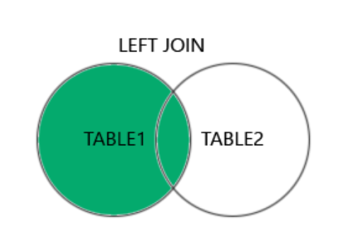

MySQL LEFT JOIN முக்கிய சொல்
LEFT JOIN முக்கிய சொல் இடது அட்டவணையிலிருந்து (table1) அனைத்து பதிவுகளையும் மற்றும் வலது அட்டவணையிலிருந்து (table2) பொருந்தக்கூடிய பதிவுகளையும் (ஏதேனும் இருந்தால்) வழங்குகிறது.
MySQL LEFT JOIN
LEFT JOIN தொடரியல்
SELECT column_name(s)
FROM table1
LEFT JOIN table2
ON table1.column_name = table2.column_name;டெமோ தரவுத்தளம்
இந்த டுடோரியலில் நன்கு அறியப்பட்ட Northwind மாதிரி தரவுத்தளத்தைப் பயன்படுத்துவோம்.
"Customers" அட்டவணையிலிருந்து ஒரு தேர்வு கீழே உள்ளது:
| CustomerID | CustomerName | ContactName | Address | City | PostalCode | Country |
|---|---|---|---|---|---|---|
| 1 | Alfreds Futterkiste | Maria Anders | Obere Str. 57 | Berlin | 12209 | Germany |
| 2 | Ana Trujillo Emparedados y helados | Ana Trujillo | Avda. de la Constitución 2222 | México D.F. | 05021 | Mexico |
| 3 | Antonio Moreno Taquería | Antonio Moreno | Mataderos 2312 | México D.F. | 05023 | Mexico |
மற்றும் "Orders" அட்டவணையிலிருந்து ஒரு தேர்வு:
| OrderID | CustomerID | EmployeeID | OrderDate | ShipperID |
|---|---|---|---|---|
| 10308 | 2 | 7 | 1996-09-18 | 3 |
| 10309 | 37 | 3 | 1996-09-19 | 1 |
| 10310 | 77 | 8 | 1996-09-20 | 2 |
MySQL LEFT JOIN எடுத்துக்காட்டு
பின்வரும் SQL கூற்று அனைத்து வாடிக்கையாளர்களையும், அவர்களுக்கு எந்த ஆர்டர்கள் இருந்தாலும் அவற்றையும் தேர்ந்தெடுக்கும்:
SELECT Customers.CustomerName, Orders.OrderID
FROM Customers
LEFT JOIN Orders ON Customers.CustomerID = Orders.CustomerID
ORDER BY Customers.CustomerName;குறிப்பு:
LEFT JOIN முக்கிய சொல் வலது அட்டவணையில் (Orders) பொருத்தங்கள் இல்லாதபோதும் இடது அட்டவணையிலிருந்து (Customers) அனைத்து பதிவுகளையும் வழங்குகிறது.